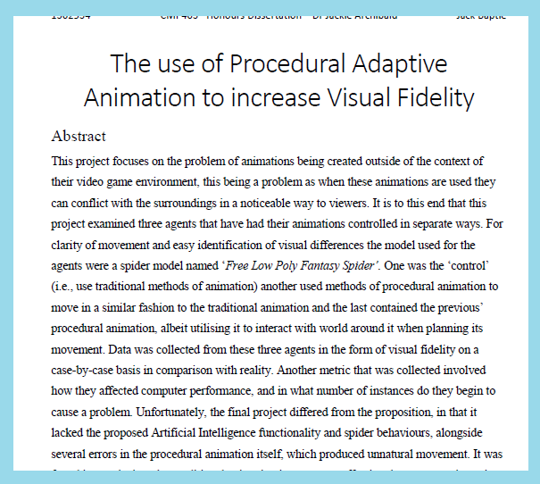

Download a copy of the game here:

Download a copy of the source code here:
Current State of the project for single player and multi-player
The Team:
Myself: Programmer
Divij Sood: Programmer
Anastasios Skandalis: Programmer
Anna Kusuraki: Designer/Manager
Mat Boyle: Designer
Katarzyna Goszka: Artist
Iain Lauchlan Mcleod: Audio
This project took place during the 48-hour stretch of the 2017 Global Game Jam.
My main goal during this project was to make a finished build within the 48-hour timeframe, as a prior game-jam had finished with an unplayable project.
I managed to meet that goal after the jam had ended, and people enjoyed playing our game :)
In the project itself I implemented the Xbox controller input management, multiplayer instantiation based on detected number of controllers, the water shader effect, the pebble movement, and players aiming reticle movement.